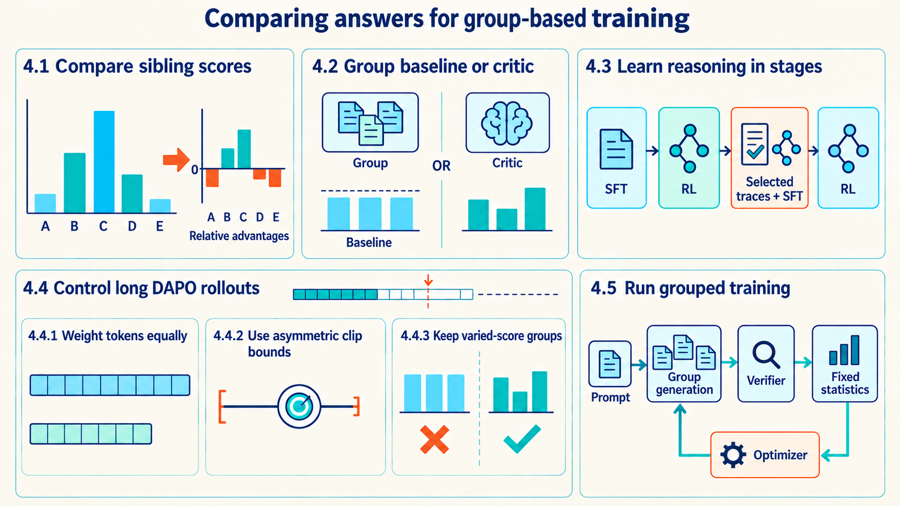
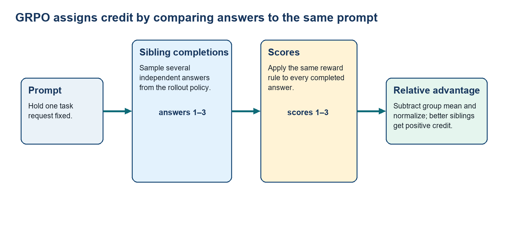
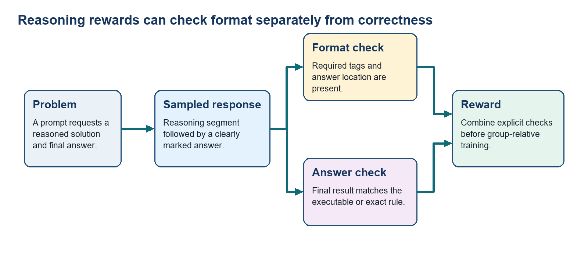
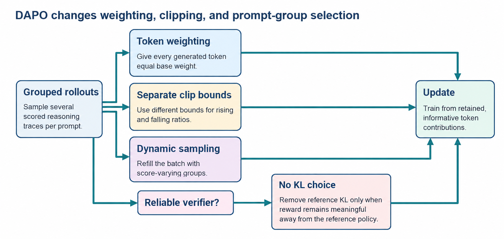

4 GRPO and DAPO for reasoning
Training several answers for each prompt trades extra generation work for a comparison between their scores.
PPO uses a learned value model to compare a sampled result with what was expected. When several answers to the same prompt can be scored, those sibling results can provide the comparison without learning a separate return prediction. Group Relative Policy Optimization (GRPO) samples \(G\) completions for one prompt, scores them with the same rule, and measures each score relative to its siblings. That relative score becomes the completion advantage.1
GRPO is useful when several completions can be scored cheaply and their outcomes differ. It replaces learned value predictions with group comparisons, but gives every token in one completion the same sequence-level advantage. An equal-score group provides no comparison at all. Long answers and groups with no score differences therefore create different problems: how much weight an answer receives, and whether its group provides a nonzero advantage for the update.
For the running repair case, one prompt produces a group of candidate diagnoses and patches. Private training-verifier tests score each complete attempt. The group mean says whether a patch was better than its siblings, and the selected trajectory remains available for token-level teacher-forced scoring during the update. Separate held-out tests are used only for final evaluation.
Replacing the value model does not automatically remove the frozen reference. The group comparison answers which sibling scored better, while the reference measures how far token probabilities moved from the starting behavior. An implementation may use both because they answer different questions.
Comparing several answers changes both the learning calculation and the practical training choices. The five regions below connect that comparison to reasoning training, three DAPO controls, and the grouped update.

Section 4.1 preserves the ranking of sibling scores when forming relative advantages. Section 4.2 compares alternative baselines, while Section 4.3 shows a reasoning-training example. Sections 4.4.1 to 4.4.3 are coordinated controls inside Section 4.4, not consecutive training stages. In Section 4.5, fixed statistics are the saved old-policy and reference scores, rewards, and advantages. Current-policy scores are recalculated during updates.
4.1 Comparing answer rewards with GRPO
Several scored answers to one prompt can supply their own comparison value. GRPO must convert those scores into one advantage for each completion. Because absolute score levels can differ between prompts, the update forms its comparison from siblings scored under the same rule. Their mean and spread provide that local reference, which the four-answer calculation below makes explicit.
For a group of rewards \(r_1\) through \(r_G\) for one prompt, GRPO centers each completion against its group mean and often normalizes by group standard deviation. Every token in completion \(i\) receives the same estimated sequence-level advantage \(\hat{A}_i\). An answer above the group’s mean score receives positive advantage. One below it receives negative advantage. This comparison follows the supplied scores, which need not perfectly reflect correctness.2
For one GRPO training example, draw \(G\) fresh completions from the current or saved rollout policy for the same prompt. A reward model or verifier scores each whole completion to produce the \(G\) scalar values \(r_1\) through \(r_G\). The mean and standard deviation are ordinary reductions across those returned numbers. No separate critic estimates them. The resulting normalized advantage is copied to the tokens of its own completion for the policy update.
Within-prompt comparison becomes one training advantage per completion. The other sampled answers provide the baseline used to measure whether one answer was relatively useful.
\[ \hat{A}_i = \frac{r_i - \mathrm{mean}(r_{1:G})}{\mathrm{max}(\mathrm{std}(r_{1:G}), \epsilon_{\mathrm{std}})} \tag{4.1}\]
Variables
- \(\hat{A}_i\): Estimated advantage assigned to completion \(i\).
- \(r_i\): Scalar reward for that completion.
- \(\operatorname{mean}(r_{1:G})\): Average reward across \(G\) sibling completions.
- \(\operatorname{std}(r_{1:G})\): Population standard deviation of those rewards.
- \(\epsilon_{\mathrm{std}}\): Small positive denominator floor.
Mechanism: Subtract the group mean, then divide by the larger of the group standard deviation and \(\epsilon_{\mathrm{std}}\). A uniform group has zero numerator, so every advantage is zero. Interpretation: Replace a learned critic with a within-prompt comparison that reinforces completions above their group mean and suppresses those below it. Scale: Subtracting the mean centers the rewards. Dividing by their standard deviation removes the original reward scale, so \(\hat{A}_i\) expresses estimated relative position within the group.
The estimated completion advantage supplies the update direction, but the trainer still needs to quantify how the policy changed each sampled token. It stores the rollout log-probability of every generated token, re-scores the same token IDs under the current policy, and converts the difference into the current-to-old ratio already used by PPO. The ratio is then multiplied by the completion advantage copied to that token.
The clipped contribution for one token combines the current-to-old ratio with the completion advantage. Clipping changes the sampled surrogate contribution rather than the model probability.
Chapter 3 numbered response positions from \(t=0\) through \(T-1\). The sums below number the same generated-token positions from \(t=1\) through \(|o_i|\), so the terminal token is \(T-1\) in the earlier notation and \(|o_i|\) here. This is only an indexing change. Token alignment, ratios, and advantages keep the same meaning.
\[ C_{i,t} = \mathrm{min}\left(\rho_{i,t}\hat{A}_i, \mathrm{clip}(\rho_{i,t}, 1-\epsilon, 1+\epsilon)\hat{A}_i\right) \tag{4.2}\]
Variables
- \(C_{i,t}\): Clipped surrogate contribution for token \(t\) in completion \(i\).
- \(\rho_{i,t}\): Current-to-old selected-token probability ratio.
- \(\hat{A}_i\): Fixed estimated sibling advantage copied to every generated token in completion \(i\).
- \(\epsilon\): Configured ratio deviation around one.
Mechanism: Compare the ordinary ratio-weighted advantage with the clipped-ratio version and keep the more conservative sampled contribution. Interpretation: Remove extra surrogate-objective benefit after the observed ratio crosses the relevant bound. No probability is forcibly capped.
The group objective averages those token contributions inside each completion, averages completions inside a prompt group, and optionally subtracts a reference-policy divergence.
\[ J_{\mathrm{GRPO}} = \mathbb{E}\left[\frac{1}{G}\sum_{i=1}^{G}\frac{1}{|o_i|}\sum_{t=1}^{|o_i|}\left(C_{i,t}-\beta_{\mathrm{KL}}D_{\mathrm{KL}}\left(\pi_\theta(\cdot\mid s_{i,t})\mid\mid\pi_{\mathrm{ref}}(\cdot\mid s_{i,t})\right)\right)\right] \tag{4.3}\]
Variables
- \(J_{\mathrm{GRPO}}\): Group-relative objective to maximize.
- Expectation: Average across sampled prompts and their grouped rollouts.
- \(G\): Number of sibling completions for one prompt.
- \(o_i\) and \(|o_i|\): Completion \(i\) and its generated-token count.
- \(C_{i,t}\): Clipped surrogate contribution defined above.
- \(D_{\mathrm{KL}}\): Current-to-reference next-token distribution difference at state \(s_{i,t}\).
- \(\beta_{\mathrm{KL}}\): Non-negative weight on that reference penalty.
Mechanism: Average token terms inside each completion, then average the G completions equally. Each token term combines the already-defined clipped contribution with the weighted reference-policy divergence. Interpretation: Use sibling reward differences to favor higher-scoring completions. Averaging gives each completion equal base weight, while the optional KL penalty discourages changes from the reference policy. A minimization optimizer receives the negative objective.
An implementation can calculate exact full-vocabulary KL at each state, or use the non-negative sampled estimator that DeepSeekMath gives in Section 4.1.1, Equation 4.3
\[ u = \log \pi_{\mathrm{ref}}(a\mid s) - \log \pi_\theta(a\mid s); \hat{D}_{\mathrm{KL}} = \exp(u) - u - 1 \tag{4.4}\]
Variables
- \(u\): Reference-minus-current selected-token log-probability at one state and action.
- Sampled KL estimate: Non-negative estimator used in many GRPO implementations.
- \(s\): Fixed token state at which both policies are evaluated.
- \(a\): Selected token sampled from the current policy at state \(s\).
- \(\pi_\theta\) and \(\pi_{\mathrm{ref}}\): Current and frozen reference policies evaluated on the same \(s\) and \(a\).
Mechanism: Subtract current log-probability from reference log-probability, exponentiate that difference, then subtract the difference and one. Interpretation: Estimate the forward current-to-reference token KL without treating one raw log-ratio as a distance. With actions sampled from the current policy at a fixed state, the estimator’s expectation equals \(D_{\mathrm{KL}}(\pi_\theta\|\pi_{\mathrm{ref}})\) when the two distributions have equal support. Equal support means that every token with positive probability under either policy also has positive probability under the other.
Finite forward KL alone is not enough for this estimator identity. It requires \(\pi_{\mathrm{ref}}(a\mid s)>0\) wherever \(\pi_\theta(a\mid s)>0\), but still permits reference probability on tokens to which the current policy assigns zero. For example, if \(\pi_\theta=(1,0)\) and \(\pi_{\mathrm{ref}}=(0.5,0.5)\), the only sampled action gives \(0.5-\log(0.5)-1\approx0.193\). The exact forward KL is instead \(-\log(0.5)\approx0.693\). The reference mass on the unsampled action accounts for the difference.
The expectation above is under the current policy. DeepSeekMath’s GRPO objective instead samples rollout tokens from \(\pi_{\mathrm{old}}\). When old and current policies agree at that state, saved actions follow the distribution required by the identity. Once the policy changes, averaging over the saved actions without importance correction generally estimates a different quantity. Treat it as an old-policy sampling approximation, not a guarantee of the exact current-policy KL. Current and reference scoring should use the same vocabulary and identical hard support masks so the equal-support condition is not silently broken.
If all completions have identical reward, every centered advantage is zero. A group that is entirely correct or entirely wrong therefore cannot support a within-prompt comparison.
GRPO can therefore remove PPO’s separate value model when sibling scores form a useful comparison. It does not create the scorer, and its completion-level advantage cannot say which individual token helped. When every sibling receives the same score, the method needs a different batch, denser process feedback, or another source of credit.
One GRPO update follows five ordered steps.
Prompts: Sample a prompt batch.
Sibling answers: Generate several completions for every prompt.
Scores: Evaluate each completion with the same reward rule.
Relative advantage: Center and normalize scores within each prompt group.
Policy update: Use each completion advantage with its token probabilities.

A learned reward model can supply the completion scores. In an RLVR run, an executable verifier can supply the same scores without changing the grouped rollout.
Example: four-completion GRPO advantage
For one prompt, sample four sibling completions. In sample order, a verifier returns rewards \([0.25, 0.75, 0.75, 0.25]\).
Inputs and measurement
The verifier or reward model returns one scalar for each completed answer. The trainer reduces the four returned values to their mean and population standard deviation, then assigns each completion its normalized group-relative advantage.
Calculation
The group mean is \(\mu\), and its population standard deviation is \(\sigma\).
\[\mu=0.50,\qquad \sigma=0.25,\qquad (\hat A_1,\hat A_2,\hat A_3,\hat A_4)=(-1,1,1,-1)\]
Interpretation: The two higher-scoring completions receive a normalized advantage of 1 and the two lower-scoring completions receive negative 1. A group with no reward variation would instead produce zero advantage for every completion.
- When group comparison helps: A sibling baseline is useful when several independent completions can be sampled for the same prompt and a reward can distinguish them. It is weaker when all samples receive the same outcome or when the task needs different credit at different token positions. In those cases a critic, process reward, or different sampling policy can provide more useful signal.
4.2 Choosing group baselines or a critic
GRPO has now produced an advantage from sibling scores, while PPO produced its advantage from a learned value model. Choosing between them requires knowing what information and cost are lost when the value model is removed. Compare the source of the comparison value, the additional model state, the detail of token credit, and the tasks that make each source useful.
Baseline: PPO uses a learned value model \(V_\phi\) plus GAE; GRPO uses the mean outcome of sibling completions.
Additional large model: PPO retains a value/critic model; GRPO does not need that extra model when group comparison is informative.
Detail of credit: PPO’s credit can vary by token or state; GRPO applies one group-relative value across a completion.
Typical fit, as this guide’s recommendation: PPO supports general online RLHF. GRPO can fit memory-constrained reasoning tasks when several answers can be scored by a reliable verifier. This inference uses GRPO’s removal of the critic and the reported mathematics setup; DeepSeekMath does not establish a best method across tasks.4
Choosing the baseline: Use PPO’s critic when a token-level baseline is valuable and its added memory and training cost are acceptable. Use GRPO when several completions of the same prompt can be scored cheaply and their relative quality is informative. The choice is about the credit-assignment signal, not a claim that one algorithm always dominates the other.
The following memory and cache implications are this guide’s engineering deductions from the model roles and tensor lifetimes, not measured performance results from DeepSeekMath. Removing a separate critic saves its weights, gradients, optimizer state, and training work. It does not remove the cost of generating sibling answers. The group size \(G\) counts answers needed for one comparison, whereas generation concurrency counts answers whose KV caches occupy the GPU at the same time. A trainer can generate a group in smaller batches while keeping the rollout policy fixed, retain token IDs and selected-token log probabilities, and calculate the group advantage after all scores arrive. Full-vocabulary logits and generation caches need not be retained for every sibling throughout optimization.
A group comparison need not divide by reward standard deviation. REINFORCE Leave-One-Out (RLOO) compares one completion’s reward with the mean reward of the other completions for that prompt. Leaving out the completion being evaluated makes its comparison value independent of its own sampled action, provided the sibling samples are independent conditional on the prompt. The method still needs several answers per prompt, but no learned critic. RLOO for LLM alignment studies this sequence-level REINFORCE update.5
Example: leaving one answer out of the baseline
Reuse the four verifier rewards \([0.25,0.75,0.75,0.25]\) from Section 4.1. This calculation compares baseline choices on the same sampled batch, not two trained models. For completion \(i\), let \(b_{-i}\) be the mean of the other three rewards and \(A_i^{\mathrm{LOO}}\) its reward minus that mean.
\[b_{-i}=\frac{1}{G-1}\sum_{j\ne i}r_j, \qquad A_i^{\mathrm{LOO}}=r_i-b_{-i}.\]
For the first completion, the comparison mean is \((0.75+0.75+0.25)/3=7/12\), giving \(A_1^{\mathrm{LOO}}=1/4-7/12=-1/3\). Applying the same rule to all four gives
\[\left(A_1^{\mathrm{LOO}},A_2^{\mathrm{LOO}},A_3^{\mathrm{LOO}},A_4^{\mathrm{LOO}}\right) =\left(-\frac13,\frac13,\frac13,-\frac13\right).\]
The directions agree with GRPO’s \([-1,1,1,-1]\), but the magnitudes differ. Here \(A_i^{\mathrm{LOO}}=G(r_i-\bar r)/(G-1)\), where \(\bar r\) is the mean of all four rewards. GRPO additionally divides the centered reward by its standard deviation.
Conclusion: RLOO and GRPO both compare sibling outcomes, but their scaling differs. RLOO also uses a REINFORCE objective rather than becoming the clipped GRPO objective merely by changing this denominator. An equal-score group gives zero centered reward under either baseline.
Example: answer length and concurrency determine the cache
A grouped training run is running out of memory while generating long answers. Its proposed model has 32 attention layers, 8 key/value heads per layer, and 128 values in each key or value head. Cached values use two bytes. These dimensions come from the model configuration, not from the GRPO objective.
Inputs and calculation
Each stored token position needs both keys and values at every layer. The five factors count two caches, 32 layers, 8 KV heads, 128 values per head, and two bytes per value:
\[2\times32\times8\times128\times2=131{,}072\ \mathrm{bytes}=128\ \mathrm{KiB}.\]
KiB and GiB use powers of two: \(1\,\mathrm{KiB}=2^{10}\) bytes and \(1\,\mathrm{GiB}=2^{30}\) bytes.
At 8,192 stored positions per answer, including its prompt, one answer needs \(8{,}192\times128\,\mathrm{KiB}=1{,}048{,}576\,\mathrm{KiB}\), or 1 GiB of KV cache. Eight concurrent answers need 8 GiB. Sixty-four need 64 GiB. This calculation assumes separate caches with no shared prompt storage and excludes allocation overhead, model weights, and other tensors.
Conclusion: A 64-answer group does not require 64 GiB of simultaneous cache if it is generated in smaller batches. Two concurrent answers use about 2 GiB under these assumptions, but completing the group takes more generation rounds. Sharing prompt caches or changing cache precision can alter the result further. Compare the measured generation peak with the full critic state saved, not just the critic’s weight size. Removing a critic is not a promise that the resulting run will fit.
TRL exposes generation batch settings separately from optimization settings, and its vLLM integration supports sharing training GPUs or using a separate generation server. The reference model also remains a separate budget decision: the versioned GRPO configuration can omit it when the KL coefficient is zero.6 These are implementation options to measure, not changes to the GRPO requirement that sibling outputs for one comparison come from the same prompt and fixed old policy.7
4.3 Training reasoning in DeepSeek-R1
The PPO-GRPO comparison identifies when sibling scores can replace a value model. A reasoning system still needs useful solution attempts and a scoring rule before that group update can teach anything. The DeepSeek sequence begins with mathematics data and supervised solutions, moves to rule-scored reasoning attempts, and then retains successful traces for later training stages.
Chain-of-thought example: A worked solution written as intermediate reasoning steps before the final answer.
Program-of-thought example: A solution that expresses part of the reasoning as executable code so calculation can be checked by running it.
DeepSeekMath case study: A staged example of preparing a mathematics-capable policy before applying group-relative optimization.8
The training sequence has three stages, and each stage supplies an input needed by the next.
Mathematics corpus: Retain mathematics-heavy web content at scale so the base model covers the domain.
Supervised solutions: Teach readable decomposition and code-supported calculation so useful solution paths can be sampled.
Group-relative update: Sample several answers to one problem, score them, and reinforce solutions that beat their siblings.
- Outcome and process supervision: Outcome supervision scores the final answer. Process supervision scores a checked intermediate reasoning step.9 Extending this pattern to checked program results or tool states is this guide’s engineering proposal. Uesato and colleagues did not test those settings. Such process rewards give earlier feedback only when the intermediate checks are reliable.
DeepSeek-R1-Zero tests the next question: can rule-scored reasoning emerge directly from a base model without supervised reasoning traces? It applies GRPO with accuracy and format rewards. The training template places the reasoning process inside <think>...</think> tags and the final answer inside <answer>...</answer> tags. These are delimiters in the generated response, not a separate hidden token channel.10

The experiment produced strong mathematics and code reasoning, but the reward did not teach all communication qualities. Language mixing and poor readability made the result unsuitable as a general product model.
- Rejection sampling: Generate several candidate solutions, retain those that pass trusted correctness and quality checks, and use the retained traces as supervised examples. This selects training data. It is not another policy objective.
DeepSeek-R1 addresses the observed limitations with four connected stages.
Cold-start SFT: Use a small set of curated long reasoning examples to establish readable format before RL.
Reasoning RL: Apply GRPO to mathematics and code, including a language-consistency reward to reduce mixing.
Rejection-sampling SFT: Generate reasoning and general samples, retain the useful traces, and retrain broadly on that curated set.
Final RL: Train across prompt types while combining reasoning results with helpfulness and harmlessness checks.
RL and SFT are complementary in this pipeline. Rule-based rewards discover and strengthen useful reasoning, while curated supervised data restores presentation and general behavior that the narrow reward did not express. Filtering thresholds, reward scales, and data mixtures still require held-out evaluation. The DeepSeek-R1 report supplies this particular staged example.11 Earlier STaR work also generated and filtered rationales for further supervised training. It is a related bootstrapping method, not the origin of generic rejection sampling.12
An increase in single-answer accuracy does not reveal every change in the model’s reasoning. Training can make a successful solution easier to sample while making other solution styles rarer. Entropy measures how spread out a probability distribution is: a near-certain next token has lower entropy than several plausible next tokens. Lower token entropy can accompany reduced variety, but token entropy and the number of distinct correct solution strategies are not the same measurement.
Evaluate both single-attempt success and success across a fixed number of attempts, together with answer length and representative solution types. Chapter 6 develops pass@1 and pass@k for that comparison. A checkpoint can improve the former without improving every larger sampling budget. Whether a particular run learns additional solutions, mostly concentrates existing ones, or loses useful alternatives is an empirical question for that model, task set, and budget.
4.4 Training long answers with DAPO
The DeepSeek reasoning pipeline can produce long answers, while standard GRPO gives no information when every sibling receives the same score. Long answers can be underweighted, while equal-score groups spend rollout work without producing a comparison. These two pressures motivate DAPO, which changes both the grouped objective and the prompt groups retained for an update.
Decoupled Clip and Dynamic Sampling Policy Optimization (DAPO) is a grouped reasoning-training recipe presented in Session 3 v1, PDF p. 30, and the DAPO paper. It changes how generated tokens are averaged, where the two clipping bounds stop adding objective benefit, and which sampled groups enter an update. Those three controls are developed below. A fourth control adjusts the reward near the response-length limit.13
Overlong reward shaping applies a gradual penalty as an answer approaches the maximum generation length. A response cut off by that limit is not necessarily a failed solution. It may be an unfinished useful attempt. Length-aware reward handling reduces the abrupt change caused by treating all truncated answers identically. It still requires a configured length budget and does not make long reasoning intrinsically undesirable. The adjusted score enters the group-advantage calculation before the objective below.
The published recipe also omits explicit reference-policy KL regularization. This is a separate choice from token averaging, reward scaling, and clipping. A reference penalty can resist useful changes in reasoning length or style, but removing it also removes that restraint on unwanted changes. Reliable task rewards, behavior checks beyond the rewarded task, and monitoring of diversity remain necessary. A testable answer alone does not guarantee stable no-KL training.
Implementing DAPO therefore requires the trainer to expose these controls and the reward function to implement the chosen length treatment. Selecting a generic GRPOTrainer class does not by itself establish that its loss reduction, clipping, batch filtering, and reward handling match DAPO.
4.4.1 Giving each answer token equal weight
DAPO first changes how completions of different lengths contribute to the group loss. The PPO surrogate in Chapter 3 leaves the sampling-and-reduction rule inside its expectation. The GRPO equation above makes the reduction explicit: it averages tokens inside each completion and then gives every sibling equal weight. DAPO instead counts every generated token once in one shared denominator, so a 40-token completion contributes four times as many token terms as a 10-token completion before their advantage values are considered. This changes the averaging weights, not the reward or the group standard deviation used to calculate an advantage.14
\[ J_{\mathrm{DAPO}} = \mathbb{E}\left[\frac{1}{\sum_{i=1}^{G}|o_i|}\sum_{i=1}^{G}\sum_{t=1}^{|o_i|}\mathrm{min}\left(\rho_{i,t}\hat{A}_i, \mathrm{clip}(\rho_{i,t}, 1-\epsilon_{\mathrm{low}}, 1+\epsilon_{\mathrm{high}})\hat{A}_i\right)\right] \tag{4.5}\]
Variables
- \(J_{\mathrm{DAPO}}\): Objective to maximize.
- Expectation: Average across sampled prompts and retained groups whose scores contain variation.
- \(G\): Number of sibling completions.
- \(o_i\) and \(|o_i|\): Completion \(i\) and its generated-token count.
- \(\rho_{i,t}\): Current-to-old probability ratio for token \(t\) in completion \(i\).
- \(\hat{A}_i\): Estimated normalized group advantage copied to every token in completion \(i\).
- \(\epsilon_{\mathrm{low}}\) and \(\epsilon_{\mathrm{high}}\): Lower and upper surrogate-ratio deviations.
Mechanism: Count all generated tokens in one denominator, visit every completion and token, compare ordinary and clipped terms, and keep the conservative value. Interpretation: Give each generated token equal base weight before its completion advantage determines update direction. A minimization optimizer receives \(-J_{\mathrm{DAPO}}\).
Example: DAPO token-level averaging denominator
One retained reward group contains four sampled completions of 8, 32, 40, and 20 generated tokens.
Inputs and measurement
The tokenizer counts generated response-token IDs after sampling. DAPO sums those counts across the retained group before averaging the token objective.
Scale: The denominator counts generated tokens. Its reciprocal is a per-token averaging weight, not a reward.
Calculation
\[8+32+40+20=100,\qquad \text{weight per token}=\frac{1}{100}\]
Interpretation: The denominator is 100 tokens, so every generated decision receives the same base weight. Rewards and advantages must still favor correct reasoning, rather than length alone.
4.4.2 Using separate upper and lower clip bounds
Equal token weighting determines how much each generated decision contributes. It does not determine when a probability change stops earning additional objective benefit. Standard symmetric PPO clipping uses the same deviation on either side of one. DAPO separates the two deviations, allowing a larger upper bound without also lowering the lower bound.
For a positive-advantage token, increasing the upper bound leaves room for a larger relative probability increase to improve the sampled objective. That can help tokens which were initially unlikely become more likely before their positive contribution is clipped. Keeping the lower bound fixed does not grant an equally larger relative decrease to negative-advantage tokens. This is the paper’s motivation for supporting exploration and avoiding early entropy collapse, not a guarantee that entropy will increase. Other tokens, shared model parameters, reward quality, and repeated updates still affect the final distribution.15
Example: asymmetric DAPO clipping
Reuse the normalized advantages from the preceding four-completion example: one completion has \(\hat{A}_i=+1\) and another has \(\hat{A}_i=-1\). For one token from the positive completion the current-to-old ratio is 1.35; for one token from the negative completion it is 0.75.
Inputs and measurement
Store old token probabilities during rollout, gather current probabilities for the same token IDs during the update, and divide current by old. The +1 and −1 values come from the earlier within-group normalization. For this illustrative configuration use \(\epsilon_{\mathrm{high}}=0.28\) and \(\epsilon_{\mathrm{low}}=0.10\), giving upper and lower bounds of 1.28 and 0.90. Each completion-level advantage is copied to all of its generated tokens; the calculation does not label individual tokens as helpful or harmful.
Calculation
\[\begin{aligned}\hat A=1:&\quad\min(1.35\times1,1.28\times1)=1.28\\\hat A=-1:&\quad\min(0.75\times(-1),0.90\times(-1))=-0.90\end{aligned}\]
Interpretation: At these observed ratios, the positive surrogate term is evaluated with 1.28 and the negative term with 0.90. Ratios may remain beyond those values. Clipping only removes additional objective benefit from those sampled terms.
The next diagram groups three DAPO controls with a separate choice about reference regularization. Overlong-answer shaping, described above, is another part of the DAPO recipe but is not drawn here.

Removing KL is therefore not a default improvement. It is a trade-off that depends on a reward remaining meaningful away from the reference policy and on other controls preventing collapse.
4.4.3 Keeping groups with different rewards
The grouped advantage learns only when sibling scores create a useful comparison. Some sampled prompt groups repeatedly fail to supply that comparison. A useful selection rule must therefore identify zero-variation groups before the trainer refills the batch, and its cost is measured by attempted versus retained groups.
Why uniform groups give no gradient: An all-unsuccessful group and an all-successful group both have no variation around their own mean. A policy-gradient update based only on normalized within-group advantage cannot distinguish completions in either case. Dynamic sampling keeps prompts whose sampled groups contain an informative mix of outcomes.
How dynamic sampling fills a batch: The trainer oversamples prompt groups, removes groups with zero reward variation, and continues sampling until the retained update batch reaches its target number of informative groups. This preserves effective batch size but increases and randomizes rollout cost.16
What dynamic sampling changes: Filtering and refilling change which prompts the policy sees during optimization. Track the attempted and retained group counts, reward mix, rollout cost, and held-out task performance. A high retained fraction is not automatically good if important but difficult task classes rarely produce mixed outcomes.
4.5 Running group-based training
GRPO has already defined how sibling scores become one advantage per completion. Implementation must now connect answer generation, scoring, and parameter updating through the same batch. The four components below divide those three operations, after which the compact implementation traces their shared batch.
Four components perform the grouped update.
TRL
GRPOTrainer: Manages grouped rollout and update bookkeeping.transformers: Tokenize prompts and generate sibling completions.PyTorch: Hold tensors, calculate gradients, and apply optimizer steps.
Task verifier: Return one score for each completion.
Code 4.1 is pseudocode with PyTorch operations, not a standalone program. It requires a prompt iterator, trainable and reference policies, grouped rollout and token-scoring functions, a verifier, an optimizer, and a grpo_objective helper. For a prompt batch of size \(B\) and group size \(G\), rewards and adv have shape \((B,G)\), while the selected-token log-probability arrays also carry a generated-token axis. The helper returns sampled objective terms. objective.mean() reduces them to one scalar, and negating that scalar produces the loss minimized by the optimizer. The expected state change is an update to policy. The old and reference log probabilities, verifier scores, and group advantages are fixed targets calculated without gradients. Only the current-policy scores inside grpo_objective retain a gradient path to policy.
Code example 4.1: A glass-box GRPO update turns sibling scores into one optimizer step.
# Grouped rollout, fixed targets, and policy update
prompts = next(prompt_loader) # one prompt batch
with torch.no_grad():
groups, old_logps = grouped_rollout(
policy,
prompts,
completions_per_prompt = group_size,
)
ref_logps = score_selected_tokens(reference, groups)
rewards = verifier.score(groups) # verifier scores: (B, G)
mean_r = rewards.mean(dim=1, keepdim=True)
std_r = rewards.std(
dim = 1,
correction = 0,
keepdim = True,
).clamp_min(1e-6)
# Shape: (B, G).
adv = (rewards - mean_r) / std_r
objective = grpo_objective(
policy,
groups,
old_logps,
ref_logps,
adv,
clip_eps = 0.20,
kl_coef = 0.04,
)
# Minimize the negative GRPO objective.
loss = -objective.mean()
optimizer.zero_grad()
loss.backward()
optimizer.step()The update uses four groups of values.
Sibling group:
groupscontains \(G\) completions for each prompt, the batch structure that distinguishes GRPO from PPO.Stored rollout and reference probabilities:
old_logpscontains selected-token log probabilities recorded when each sibling was sampled.ref_logpsscores those same token IDs under the frozen reference. Both arrays are detached update inputs.grpo_objectivere-scores the tokens underpolicyto form current-to-old ratios and uses current/reference selected-token scores in the non-negative sampled KL estimator defined above.Reward normalization:
rewardsis the verifier or reward-model output;mean_randstd_rcreate the within-prompt baseline and scale. Theclamp_min(1e-6)value is \(\epsilon_{\mathrm{std}}\), an illustrative floor in the same units as the reward standard deviation.Advantage, objective, and update:
advis the group-relative advantage calculated from sibling completion scores.grpo_objectiveapplies the clipped ratio objective with illustrative configured valuesclip_eps=0.20andkl_coef=0.04. Both require task-specific tuning. The explicitloss = -objective.mean()line converts the maximized objective \(J_{\mathrm{GRPO}}\) into the scalar minimized by PyTorch. A trainer can manage the bookkeeping, but it cannot make a weak verifier informative.
A production TRL path packages the same responsibilities differently. GRPOConfig holds the number of generations, maximum response length, clip and KL settings, batching, and logging. GRPOTrainer calls the model to generate sibling completions and invokes one or more project-defined reward functions that return a scalar for every completion. transformers supplies tokenization and model generation, accelerate places the work on available devices, and peft can restrict updates to LoRA adapters. Exact class arguments must be checked against the installed TRL release.17
Generation usually dominates the computational cost because every prompt produces several completions before one update. Batch prompts by compatible length, record generated-token counts, and separate rollout time from optimizer time. vLLM is an optimized LLM generation engine that can raise sampling throughput when its version is compatible with the trainer. It does not calculate the verifier or determine whether the resulting reward is valid.
The generation engine and trainer can use the same GPU at different times or different GPUs concurrently. Sharing hardware reduces the number of devices required, but generation caches and training tensors compete for memory. Separate devices can overlap work, but every accepted parameter update must eventually reach the generator. A rollout batch must identify which policy version generated it so its stored probabilities remain interpretable. Moving weights, waiting for a verifier, and waiting for the longest answer can cost as much as the arithmetic in the objective.
Example: one group, shared prompts, and eight generation slots
Reuse the model configuration from Section 4.2, which needs 128 KiB of KV cache per stored token position. A training prompt has 1,024 tokens. Each of its 64 sampled completions is budgeted for 7,168 further tokens. These are planning assumptions, not measured course throughput. Only eight answers are generated concurrently, and the rollout weights remain fixed until the whole group has been scored.
Without prompt-cache sharing, each active answer stores 8,192 positions, requiring 1 GiB of cache. Eight active answers therefore require 8 GiB. The group needs at least eight rounds of eight answers, even though its learning comparison uses all 64 rewards.
If the backend can share the identical prompt cache across those eight active answers, the prompt uses \(1024\times128\,\mathrm{KiB}=0.125\,\mathrm{GiB}\) once. Each response adds \(7168\times128\,\mathrm{KiB}=0.875\,\mathrm{GiB}\). The ideal shared-cache total becomes
\[0.125+8\times0.875=7.125\,\mathrm{GiB}.\]
This saves 0.875 GiB in that active batch, not seven eighths of all model memory. Model weights, allocator overhead, score tensors, and other training state are excluded. The saving depends on exact shared prefixes and backend cache support.
Conclusion: Group size, active generation slots, and prompt-cache sharing are distinct controls. Reducing concurrency can fit a large group into memory at the cost of additional rounds. Sharing a long prompt can reduce repeated cache storage without changing the group advantage. Neither choice reduces the number of completions the verifier must score.
Answers also finish at different times. A generator that immediately fills a vacant slot can avoid waiting for the longest answer before beginning more work. A training batch may instead pad shorter answers to a common token length so PyTorch can process a rectangular tensor. Its response mask excludes those padding positions from the objective, but dense operations can still spend computation on them. Length-aware batching reduces that waste without changing which generated tokens count. Record both useful response tokens and padded token positions when investigating low throughput.
Three software routes support different levels of control. The versioned TRL GRPO interface packages the local training loop and offers vLLM integration.18 HybridFlow, the framework behind veRL, treats rollout, scoring, and updating as connected distributed operations and changes actor-model placement between training and generation.19 NVIDIA’s rolling NeMo RL algorithm documentation lists single-node and multi-node paths for GRPO, DAPO, PPO, SFT, DPO, reward-model training, and on-policy distillation, with separate backend guidance.20 NeMo RL supplies algorithm and scaling machinery. The project still supplies task data, reward or verifier logic, environment behavior, and independent acceptance tests. These are implementation choices, not different definitions of reward or advantage. Reported speedups apply only to the tested software revision, hardware, and workload.
The PagedAttention paper explains vLLM’s cache management and sharing.21 Cache reuse improves generation resource use; it does not permit scoring an answer under the wrong policy revision. For a run record, separate generation time, verifier time, update time, weight-transfer time, generated tokens, retained groups, and peak memory. The bottleneck determines whether faster generation, fewer padding positions, a cheaper verifier, or different placement will help.
Monitor the quantities that can make a grouped update silently uninformative.
Reward spread: Track the standard deviation within each prompt group and the fraction of all-equal groups.
Generation cost: Record tokens, latency, and memory per retained group, not only per optimizer step.
Policy movement: Track clip fraction and, when configured, reference-policy KL separately from task reward.
Verifier behavior: Test reward functions on known correct, incorrect, malformed, and adversarial completions before allowing them to drive rollouts.
GRPO and DAPO obtain a task-reward contribution to the policy gradient only when sibling rewards differ. A configured GRPO reference-KL term can still contribute a regularization gradient when the group advantage is zero. The common run record in Section 6.2 adds dataset, checkpoint, and evaluation versions to these method-specific diagnostics. Chapter 5 keeps these policy-update methods but asks how executable checks and tool results supply the reward, and how to keep training checks separate from final evaluation.
Shao, Z., et al. (2024). DeepSeekMath: Pushing the Limits of Mathematical Reasoning in Open Language Models (arXiv:2402.03300). Source. Link checked 2026-09-16. Sections 3–4 and Appendix A introduce GRPO, its grouped reward baseline, critic-free objective, and DeepSeekMath training sequence. Section 4.1.1, Equations 3–4, samples sibling outputs from the old policy and gives the positive ratio-based KL estimator used here. The guide’s exact forward-KL expectation statement additionally assumes actions sampled from the current policy. The empirical results concern the reported 7B mathematics models and do not show that GRPO always outperforms PPO.↩︎
Shao, Z., et al. (2024). DeepSeekMath: Pushing the Limits of Mathematical Reasoning in Open Language Models (arXiv:2402.03300). Source. Link checked 2026-09-16. Sections 3–4 and Appendix A introduce GRPO, its grouped reward baseline, critic-free objective, and DeepSeekMath training sequence. Section 4.1.1, Equations 3–4, samples sibling outputs from the old policy and gives the positive ratio-based KL estimator used here. The guide’s exact forward-KL expectation statement additionally assumes actions sampled from the current policy. The empirical results concern the reported 7B mathematics models and do not show that GRPO always outperforms PPO.↩︎
Shao, Z., et al. (2024). DeepSeekMath: Pushing the Limits of Mathematical Reasoning in Open Language Models (arXiv:2402.03300). Source. Link checked 2026-09-16. Sections 3–4 and Appendix A introduce GRPO, its grouped reward baseline, critic-free objective, and DeepSeekMath training sequence. Section 4.1.1, Equations 3–4, samples sibling outputs from the old policy and gives the positive ratio-based KL estimator used here. The guide’s exact forward-KL expectation statement additionally assumes actions sampled from the current policy. The empirical results concern the reported 7B mathematics models and do not show that GRPO always outperforms PPO.↩︎
Shao, Z., et al. (2024). DeepSeekMath: Pushing the Limits of Mathematical Reasoning in Open Language Models (arXiv:2402.03300). Source. Link checked 2026-09-16. Sections 3–4 and Appendix A introduce GRPO, its grouped reward baseline, critic-free objective, and DeepSeekMath training sequence. Section 4.1.1, Equations 3–4, samples sibling outputs from the old policy and gives the positive ratio-based KL estimator used here. The guide’s exact forward-KL expectation statement additionally assumes actions sampled from the current policy. The empirical results concern the reported 7B mathematics models and do not show that GRPO always outperforms PPO.↩︎
Ahmadian, A., et al. (2024). Back to basics: Revisiting REINFORCE-style optimization for learning from human feedback in LLMs. Proceedings of the 62nd Annual Meeting of the Association for Computational Linguistics (Volume 1: Long Papers), 12248–12267. DOI: 10.18653/v1/2024.acl-long.662. Source. Link checked 2026-09-16. Section 3 defines the leave-one-out baseline and sequence-level REINFORCE objective. Its comparisons use the paper’s selected models, reward setup, and tasks; RLOO is not GRPO with only a changed denominator.↩︎
Hugging Face. (n.d.). GRPO Trainer, TRL v0.22.2 documentation. Source. Link checked 2026-09-16. The overview, configuration table, reward-function API, and vLLM section document
GRPOTrainer, generation settings, reference use, and server or colocated generation for this release. This is versioned implementation guidance, not experimental evidence or a guarantee that default settings reproduce DAPO.↩︎Shao, Z., et al. (2024). DeepSeekMath: Pushing the Limits of Mathematical Reasoning in Open Language Models (arXiv:2402.03300). Source. Link checked 2026-09-16. Sections 3–4 and Appendix A introduce GRPO, its grouped reward baseline, critic-free objective, and DeepSeekMath training sequence. Section 4.1.1, Equations 3–4, samples sibling outputs from the old policy and gives the positive ratio-based KL estimator used here. The guide’s exact forward-KL expectation statement additionally assumes actions sampled from the current policy. The empirical results concern the reported 7B mathematics models and do not show that GRPO always outperforms PPO.↩︎
Shao, Z., et al. (2024). DeepSeekMath: Pushing the Limits of Mathematical Reasoning in Open Language Models (arXiv:2402.03300). Source. Link checked 2026-09-16. Sections 3–4 and Appendix A introduce GRPO, its grouped reward baseline, critic-free objective, and DeepSeekMath training sequence. Section 4.1.1, Equations 3–4, samples sibling outputs from the old policy and gives the positive ratio-based KL estimator used here. The guide’s exact forward-KL expectation statement additionally assumes actions sampled from the current policy. The empirical results concern the reported 7B mathematics models and do not show that GRPO always outperforms PPO.↩︎
Uesato, J., et al. (2022). Solving Math Word Problems With Process- and Outcome-Based Feedback. arXiv:2211.14275. Source. Link checked 2026-09-16. Sections 2–3 define and compare process-based and outcome-based feedback for math word problems. The findings are task-specific and do not establish that process supervision is universally better.↩︎
DeepSeek-AI. (2025). DeepSeek-R1: Incentivizing Reasoning Capability in LLMs via Reinforcement Learning (version 1). arXiv:2501.12948. Source. Link checked 2026-09-16. Sections 2.2–2.3 describe R1-Zero’s accuracy and format rewards, readability and language-mixing limits, cold-start data, reasoning RL, rejection-sampling SFT, and final RL. This is the producing organization’s technical report, not an independent replication of every reported result.↩︎
DeepSeek-AI. (2025). DeepSeek-R1: Incentivizing Reasoning Capability in LLMs via Reinforcement Learning (version 1). arXiv:2501.12948. Source. Link checked 2026-09-16. Sections 2.2–2.3 describe R1-Zero’s accuracy and format rewards, readability and language-mixing limits, cold-start data, reasoning RL, rejection-sampling SFT, and final RL. This is the producing organization’s technical report, not an independent replication of every reported result.↩︎
Zelikman, E., Wu, Y., Mu, J., & Goodman, N. D. (2022). STaR: Self-Taught Reasoner, bootstrapping reasoning with reasoning. Advances in Neural Information Processing Systems, 35, 15476–15488. Source. Link checked 2026-09-16. The abstract and Section 2 describe generating rationales, retaining those yielding correct answers, and fine-tuning iteratively. This supports a related rationale-bootstrapping method, not an origin claim for rejection sampling generally.↩︎
Yu, Q., et al. (2025). DAPO: An open-source LLM reinforcement learning system at scale. Advances in Neural Information Processing Systems, 38. DOI: 10.52202/085713-3775. Source. Link checked 2026-09-16. Sections 3.1–3.4 define decoupled clipping, dynamic sampling, token-level policy-gradient loss, and overlong reward shaping; the setup also removes explicit KL regularization. The reported behavior is tied to the paper’s Qwen2.5-32B mathematics setup and is not a general no-KL safety guarantee.↩︎
Yu, Q., et al. (2025). DAPO: An open-source LLM reinforcement learning system at scale. Advances in Neural Information Processing Systems, 38. DOI: 10.52202/085713-3775. Source. Link checked 2026-09-16. Sections 3.1–3.4 define decoupled clipping, dynamic sampling, token-level policy-gradient loss, and overlong reward shaping; the setup also removes explicit KL regularization. The reported behavior is tied to the paper’s Qwen2.5-32B mathematics setup and is not a general no-KL safety guarantee.↩︎
Yu, Q., et al. (2025). DAPO: An open-source LLM reinforcement learning system at scale. Advances in Neural Information Processing Systems, 38. DOI: 10.52202/085713-3775. Source. Link checked 2026-09-16. Sections 3.1–3.4 define decoupled clipping, dynamic sampling, token-level policy-gradient loss, and overlong reward shaping; the setup also removes explicit KL regularization. The reported behavior is tied to the paper’s Qwen2.5-32B mathematics setup and is not a general no-KL safety guarantee.↩︎
Yu, Q., et al. (2025). DAPO: An open-source LLM reinforcement learning system at scale. Advances in Neural Information Processing Systems, 38. DOI: 10.52202/085713-3775. Source. Link checked 2026-09-16. Sections 3.1–3.4 define decoupled clipping, dynamic sampling, token-level policy-gradient loss, and overlong reward shaping; the setup also removes explicit KL regularization. The reported behavior is tied to the paper’s Qwen2.5-32B mathematics setup and is not a general no-KL safety guarantee.↩︎
Hugging Face. (n.d.). GRPO Trainer, TRL v0.22.2 documentation. Source. Link checked 2026-09-16. The overview, configuration table, reward-function API, and vLLM section document
GRPOTrainer, generation settings, reference use, and server or colocated generation for this release. This is versioned implementation guidance, not experimental evidence or a guarantee that default settings reproduce DAPO.↩︎Hugging Face. (n.d.). GRPO Trainer, TRL v0.22.2 documentation. Source. Link checked 2026-09-16. The overview, configuration table, reward-function API, and vLLM section document
GRPOTrainer, generation settings, reference use, and server or colocated generation for this release. This is versioned implementation guidance, not experimental evidence or a guarantee that default settings reproduce DAPO.↩︎Sheng, G., et al. (2025). HybridFlow: A flexible and efficient RLHF framework. Proceedings of the Twentieth European Conference on Computer Systems, 1279–1297. DOI: 10.1145/3689031.3696075. Source. Link checked 2026-09-16. Sections 3–5 describe RLHF as distributed dataflow, hybrid control, and actor resharding between training and generation. Reported throughput gains apply only to the tested revisions, hardware, algorithms, and baselines.↩︎
NVIDIA. (n.d.). Algorithms, NeMo RL documentation. Source. Link checked 2026-09-16. The support matrix lists single-node and multi-node routes for GRPO, DAPO, PPO, SFT, DPO, reward-model training, and on-policy distillation. The
/latest/page is rolling official documentation and must be rechecked for any exact release or backend claim.↩︎Kwon, W., et al. (2023). Efficient memory management for large language model serving with PagedAttention. In Proceedings of the 29th Symposium on Operating Systems Principles (pp. 611–626). Source. Link checked 2026-09-16. Sections 3–4 describe block-based KV-cache management and cache sharing in vLLM. Its serving results do not establish the exact savings or policy-correctness behavior of a training rollout stack.↩︎